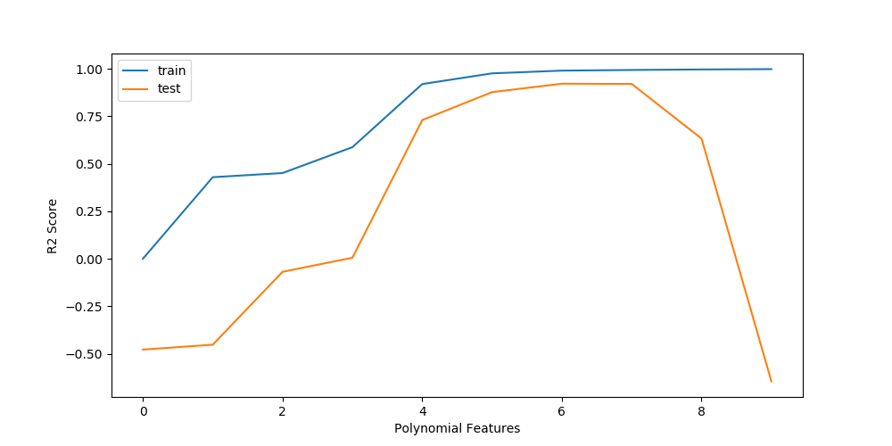
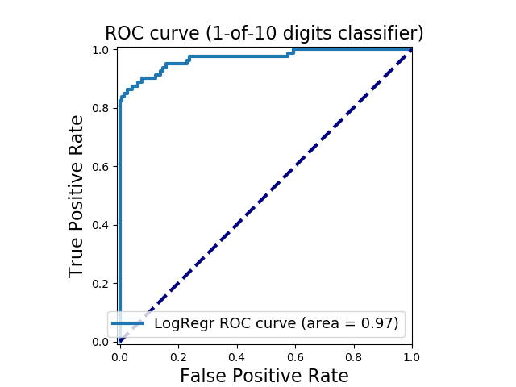

Machine
Learning
This is a showcase of my skills in Machine Learning.

On this page I will show a review of the knowledge that I have
acquired by doing the following three courses on Machine Learning.
"Introduction to Data Science in Python by University of Michigan on Coursera."
Link to the certificate
"Applied Machine Learning in Python by University of Michigan on Coursera."
Link to the certificate
"Machine Learning by Stanford University on Coursera."
Link to the certificate
Underfitting and overfitting
The linear regression scope can be extended if we use Polynomial Features, this allows us to find more complex patterns that a simple regression cannot capture. This widely used technique can lead to overfitting problems very easily. As we can see in the plot to the left, a polynomial of degree nine connects all the blue dots (training data) but fails in the orange ones (test data).

One of the methods used to determine which degree of polynomial
is a good generalization is plot R2 score vs Polynomial Feature.
The problem of overfitting is present in every model, which is why models
with regulation are developed. Regularization helps prevent overfitting
but too much regularization and we will get the opposite effect, a very
simple model that is not able to find the patterns in our data set.
Fortunately, sklearn provides a wide spectrum of possibilities to choose which parameters give the best results. In the plot we see the result of using validation_curve () on gamma in a Support Vector Classification model.
Evaluate Models
As always, it is recommended to build a simple model that will serve as a reference for our iterations. What about the dataset whose distribution is very asymmetric. Well, in these cases we use a Dummy model that predicts the value with greater presence in the data set.
 In classifier models, typically the methods for evaluating
models include Confusion Matrix, Precision-Recall curve and
ROC curve among others. Precision-Recall is a useful measure
of success of prediction when the classes are very imbalanced.
In information retrieval, precision is a measure of result
relevancy, while recall is a measure of how many truly relevant results are returned.
In classifier models, typically the methods for evaluating
models include Confusion Matrix, Precision-Recall curve and
ROC curve among others. Precision-Recall is a useful measure
of success of prediction when the classes are very imbalanced.
In information retrieval, precision is a measure of result
relevancy, while recall is a measure of how many truly relevant results are returned.
 When we need to check or visualize the performance of the multi-class classification problem, we use the AUC (Area under the curve) ROC (Receiver operating characteristics) curve. It indicates how much model is able to distinguish between classes. The higher the AUC, the better the model for predicting 0s as 0s and 1s as 1s. By analogy, the higher the AUC, the better the model to distinguish between fraudulent credit card transactions and non-fraud.
Maintenance Fines in Detroit with GradientBoostingClassifier
One of the most pressing problems facing Detroit - blight. Blight violations are issued by the city to individuals who allow their properties to remain in a deteriorated condition. Every year, the city of Detroit issues millions of dollars in fines to residents and every year, many of these fines remain unpaid. Enforcing unpaid blight fines is a costly and tedious process, so the city wants to know: how can we increase blight ticket compliance? In this example i choose GradientBoostingClassifier, fit it and then i get the top 5 of features importance, where the city must pay attention to avoid unpaid fines